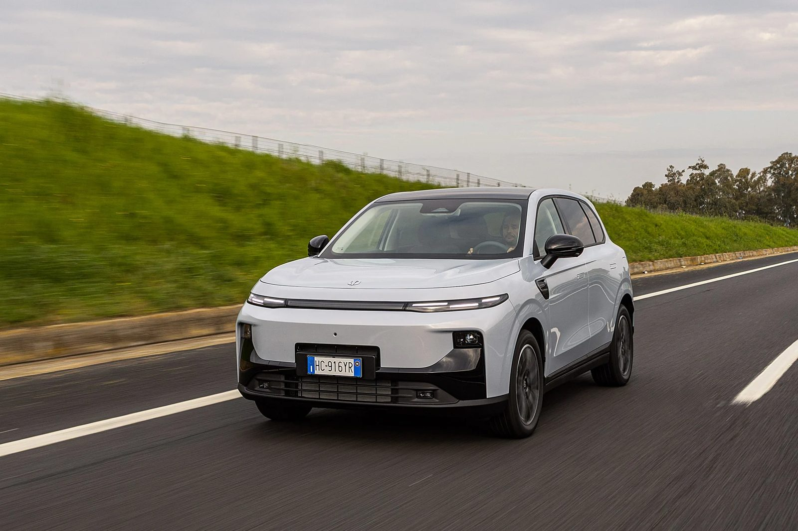

Novinky pro flipaře
Co se děje na trhu s auty v Česku a Německu. Krátce, ověřeně a s tím, co z toho plyne pro nákup a prodej.

EU chystá od prosince kvóty na dovoz hybridů z Číny, Británie a Turecka
EU podle návrhu chce od prosince omezit dovoz hybridů a plug-in hybridů z Číny, Velké Británie, Turecka, Japonska, Jižní Koreje a dalších zemí. Zda a v jaké podobě opatření skutečně zavede, je zatím otevřené.
Starší zprávy

Tesla svolává 369 572 aut Model 3, S, X a Y, zkrat může vyřadit zadní kameru
Tesla musí celosvětově svolat 369 572 vozů Model 3, Model S, Model X a Model Y vyrobených od 25. ledna 2023 do 16. prosince 2024. Při zapnutí vozu může vzniknout zkrat, po kterém přestane fungovat zadní kamera.
Do září 2026 podalo v Německu insolvenci 21 velkých autoobchodníků
Od ledna do září 2026 podalo v Německu insolvenční návrh 21 autoobchodníků s obratem přes deset milionů eur, o 10,5 procenta víc než loni. Vyplývá to z insolvenční zprávy poradenské firmy Falkensteg.

Elektroauta mají v EU 23,4 % nových registrací, benzínových aut ubylo o 20,1 %
Registrace nových osobních aut v EU v říjnu meziročně vzrostly o 2,6 % na 916 070 kusů, oznámila 24. listopadu asociace ACEA. Za leden až říjen trh roste o 5,4 % a elektroauta drží 23,4 % podílu.